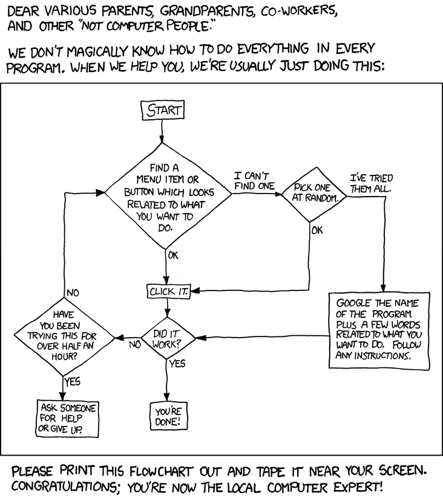

Interaction Design using Flow Charts
What is it?
Documenting how to interact with digital interfaces using Flow Charts and other diagrams.
Flow Chart Examples
Try this one first

How about this one? I think I'm dating myself with this reference.
A tech support cheat sheet for non-computer people
Flow charts explained by a flow chart

Flow Charts
- Different from site maps because time is added as a dimension
- Actions and processes are the primary items of importance (as opposed to entities or pages and relationships between them - which is the job of site maps).
- Simple visual language: boxes and lines, but also possible to use diamonds, ovals, circles, and other shapes I don’t have names for.
- As with other documents, the hard part is defining the boundaries of the flow chart - what are you not going to include in the document
Actual work examples of flow charts
When do I create a flow chart?
- Not necessary every time, not for every site
- More necessary for transactions: those instances where your users need to go through a few screens/interfaces to get something accomplished.
- Common flows include: sign-up, login, checkout, shopping carts, post an article or comment or forum post, configure or customize a product, surveys and quizzes, and others...
- They are usually made at the same time as wireframes and site maps
- Often, I include them in the same document as wireframes and site maps
My own rules for flow charts
- Usually progress from top left towards the bottom right. This means that flow arrows point down and/or to the right of the previous step (except when repeating an existing series of steps).
- Use diamond shapes for decision points (yes/no usually are the outcomes from decisions). The text in the diamond should be a question.
- Use arrowheads on your lines to denote the direction of the flows.
- Title your diagrams
- When a user acts, write “user clicks/does/submits...”
- Distinguish between user actions and system actions
Tools for creating flowcharts
- Lucidchart
- Omnigraffle
- Visio
- Axure
- Balsamiq - but there are no magnets to attach lines to shapes
- Google Drawings
Practice flow charts
Order a pizza online, and make a flow chart for it.